Recursos de Referencia
📐 Simbología y Convenciones
Guía definitiva de lectura de planos para Ingeniería Digital. Ten esta hoja a mano en tus laboratorios.
1. Conexiones (La Regla del Punto)

Izquierda: Nodo (Conectado). Derecha: Salto (No conectado).
2. Componentes Pasivos y Energía
| Símbolo | Nombre | Función y Notas |
|---|---|---|
| 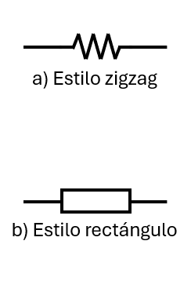 | Resistencia | Se opone a la corriente. ANSI: Zigzag (el que usamos). IEC: Rectángulo. |
| 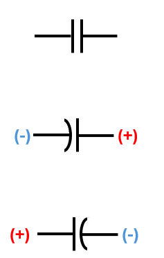 | Condensador | Almacena energía. Dos líneas paralelas. Si una es curva o tiene un (+), es polarizado (Electrolítico). |
| 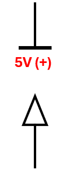 | VCC (+5V) | Fuente de alimentación positiva. Generalmente una flecha hacia arriba o una barra. |
| 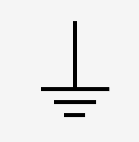 | Tierra (GND) | Referencia de 0 Voltios. El negativo común de todo el circuito. |
| 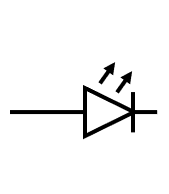 | LED | Diodo Emisor de Luz. El triángulo apunta al Cátodo (-) y la barra lo detiene. |
 |
Pulsador (NO) | Normalmente Abierto. Solo conecta mientras presionas. (Dibujado abierto). |
3. Lógica Digital (Familia 74xx)
| Símbolo | Compuerta | Lógica |
|---|---|---|
| 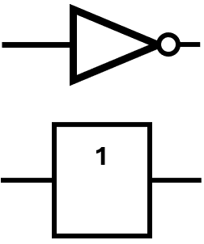 | NOT (7404) | Inversor. Triángulo con burbuja. (1 → 0). |
| 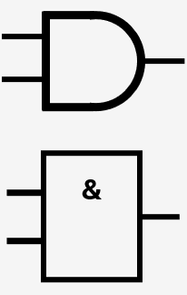 | AND (7408) | Multiplicación. Forma de "D". Todo en 1 para salir 1. |
| 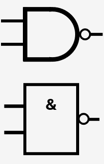 | NAND (7400) | No-Y. Una AND con burbuja al final. Universal. |
| 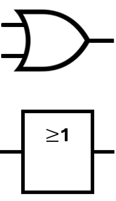 | OR (7432) | Suma. Forma curva. Basta uno en 1 para salir 1. |
| 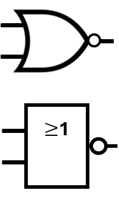 | NOR (7402) | No-O. Una OR con burbuja al final. Universal. |
| 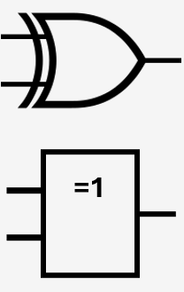 | XOR (7486) | Exclusiva. Doble línea curva. Salida 1 si son diferentes. |
⚠️ La Burbuja Mágica
En los diagramas digitales, siempre que veas un pequeño círculo (o burbuja) en una pata, significa INVERSIÓN (NOT). Si la burbuja está a la salida, la salida se niega. Si está a la entrada, la entrada se niega antes de entrar.